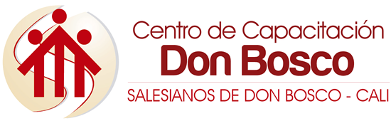
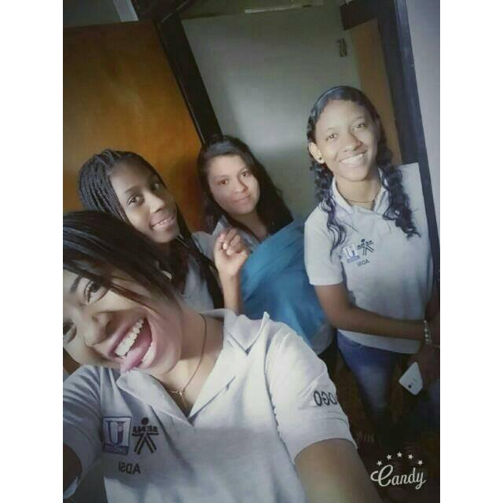

Informacion
A mis 18 años he hecho los siguientes estudios:
- Soy bachiller tenico comercial, realice las practicas en el Gobernacion de Cali.

- Estudie un tiempo en el instituto Don Bosco diseño grafico.

- Actualmente estudio la tecnologia de analisis y desarrollo de sistemas de la informacion.

Aspiraciones:
- Mi objetivo principal es realizar la etapa productiva de mi carrera con la mejor disposicion y asi poder graduarme de la tecnologìa, aspiro a realizar un buen trabajo en la empresa donde este y quedar trabajando allì, estudiare ingles ya que es una herramienta muy importante para el entorno laboral.
Hobbies:
La lectura es algo que me apasiona muchisimo, mas que un pasatiempo se ha convertido en un habito en mi vida; escribir, escuchar musica, investigar sobre temas de los que no conozco son tambien cosas que me gustan hacer. Me gusta mucho reìr con mis amigos o mi familia salir con ellos y conocer lugares, me apasiona todo lo que tenga que ver con sitemas.